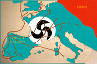

De: La Frikipedia, la enciclopedia extremadamente seria.
De: La Frikipedia, la enciclopedia extremadamente seria. De: La Frikipedia, la enciclopedia extremadamente seria.
| De la serie Países del planeta tierra: | |||||
| IV Reich Galaico. | |||||
|---|---|---|---|---|---|
| |||||
| Lema: Dominar el mundo antes que los judios y masones | |||||
| Himno: "Heil Chuck Norris"
| |||||
| 
| |||||
| [[León|Capital]] | León | ||||
| Mayor ciudad | Hamburguesa | ||||
| Lenguas oficiales | Gallego, Asturiano y Llionés. | ||||
| Gobierno | Asambleario imperialista. | ||||
| Alcalde. | Baltar. | ||||
| Área | Casi toda Europa y en aumento | ||||
| Población | 500 millones | ||||
| Moneda | Chuckeuro | ||||
| Zona horaria | Depende de Buda. | ||||
| Dominio Internet | .RG | ||||
| Código telefónico | no usan telefono, usan smartphones y celulares
| ||||
| Ten cuidado con la patada giratoria de Chuck | |||||
Tras la Hégira de Hitler y su posterior casamiento con Stalin, su ex - amante Eva Braun huyó a Galicia ( en realidad ella creyó huir a Galitzia(Polonia) al ser analfabeta funcional) donde fue recibida con grandes honores por Rouco Varela, gran patriarca galeguista de Santiago de Compostela, que le hizo contactar con Vicente Risco y Manuel Fraga y crear una reserva biológica del führer; ya que un científico de Coren le hizo un raspado vaginal de donde obtuvo restos de semen de Hitler que mezclados con restos de ADN de el Cid Campeador y de Don Pelayo dieron lugar a una serie de niños destinados a gobernar el mundo.
Vicente Risco se encargó de la educación de los niños- probeta al mismo tiempo que se aprovechaba de Eva Braun( de esa relación salió el ingeniero de cohetes Berner Von Braun que permitió a Galicia adueñarse de los cielos con sus misiles “Caxato VH3”) Argantonio, Manuel Azaña,Felipe González, Santiago Carrillo, Tejero y Cayetana Guillén Cuervo), al absorver España,Portugal,Andorra y Guibraltar Galicia se transformó en el IV Reich Galaico (Hilter y su imperio se habian venido abajo al quedarse sin cerveza y sin el sol de las islas Baleares).
Inglaterra y Francia libres ya de los nazis se envalentonaron y declararon la guerra al IV Reich galaico, al mismo tiempo que Stalin les daba por culo (quiero decir que les atacaba por detrás) por lo que ambas potencias imperialistas tuvieron dos frentes de guerra que mantener a la vez (Rusia y el Reich Galaico) y sus economias se colapsaron, perdiendo la guerra y cayendo bajo la órbita económicomilitar-política del Reich Galaico (debido al miedo que tenia la clasde alta de ambos países al comunismo y tener que compartir todo con los obreros). Esta época se conoce como Guerra Fría, década durante la cual en Europa convivieron dos grandes bloques imperialistas enemigos, enfrentándose solamente en terceros países como Vietnam, Camboya, Congo, Chile, México y Estados Fundidos.
La contienda de ambos bloques (comunistas y galaicos) duró aproximadamente cien años, durante los cuales ambas potencias imperialistas pretendieron barrer del mundo la una a la otra por un quítame esas pajas de allá, pasando por varias fases.
Época durante la cual ambos bloques estuvieron a punto de liarla parda y destruir el mundo a base de bombas nucleares, debido al gran problema agrario de los marcos de las fincas respectivas, frases tan desafortunadas como la de : “¿Donde empieza tu finca y donde acaba la mía? Yo propongo esto,desde el cabo finisterra hasta Washington es todo mio, el resto que es agua tó pa ti¿Qué te parece Iván?Tovarich de mi alma?ein?” Hizo que se desatasen conflictos diplomáticoas que el hábil Rodríguez Zapatero embajador especial en Berlín sabía deshacer, pero al ser destituido por no gustar a la cúpula militar galaica y enviar a Mariano Rajoy como embajador la cosa se complicó y los rusos comenzaron a reunir tropas en la frontera del Danubio, frente a esto Rajoy fue encerrado en el monasterio de Osera por inepto al mismo tiempo que el general Paco Vázquez tuvo la genial idea de detonar una bomba atómica en la Luna para impresionar a lo soviéticos, estos achantaron por el momento frente a tal poderío. ( cuya pericia técnica se debía a berner Von Braun).
Tras la gran pandeirada lunar el conflicto se enquistó en una serie de intervenciones indirectas entre ambos bloques, a través de guerras pequeñitas en otros países que no tenían mucho que ver entre ambos gigantes.Entre los cuales cabe destacar.
Esta fase del conflicto mundial, fue eminentemente económica-política, Galicia lanzó sus primeros satélites de telecomunicaciones, y al robar la tecnología del Ovni de Roswell desarrolló la tecnología digital, lo que le permitió contactar con millones de rusos y comerles la olla con sus televisiones llenas de cultura y formación popular exquisita, cientos de subcanales de la telegaita TVG emitiendo todo el día música gallega, tal como la música bravú, que saltó fronteras y tranformó a la juventud de devotos comunistas en adolescentes rebeldes y bravos, escuchando todo el día a grupos como Herdeiros da crús para los más jevis, y para los más pijines “Yellow pixoliñas”.
Esto unido a la prevalencia de la economía del IV Reich Galaico hizo que Rusia comenzase a decaer en manos de abuelotes que mandaban en la jefatura del partido comunista, que celosos del éxito gallego gastaron más de lo que debian en armas llevando al bloque comunista al colapso económico y provocando su caída. Al poco todo el mundo se relajó al quedar como Amo y señor el IV Reich Galaico y desde entonces las costumbres se volvieron más disolutas,bravas y ya nadie se acuerda de cómo Eva Braun tuvo que pasar el Padornelo una noche de perros.
Autor(es):